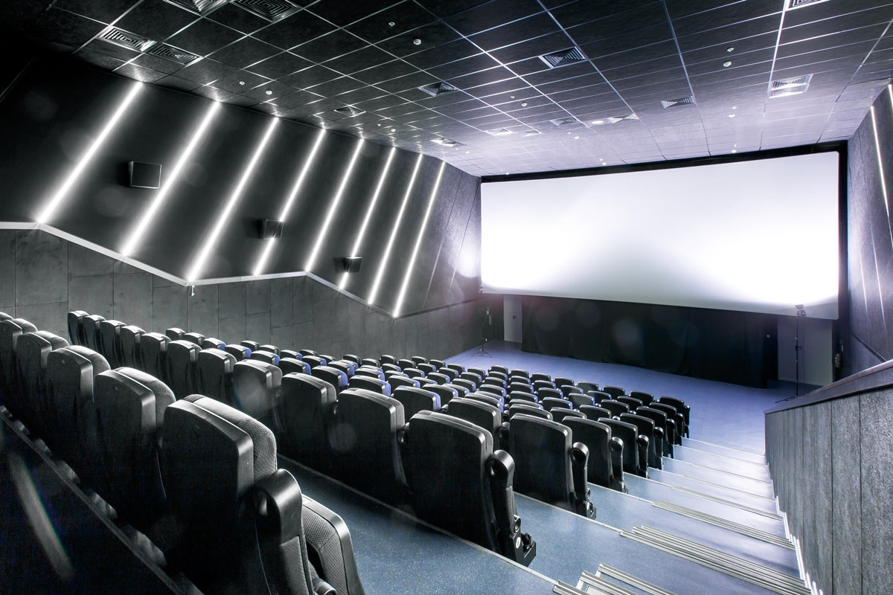

О кинотеатре МирКино
Кинотеатр «Кинопарк» расположен в общественном центре города Боровичи, Новгородской области. Кинотеатр предназначен для показа цветных, черно-белых, широкоэкранных, 2D и 3D фильмокопий. Кинотеатр ориентирован на широкий круг зрителей. У здания кинотеатра предусмотрена бесплатная парковка на 45 машиномест. В тёмное время суток подсвечиваются и здание кинотеатра и пешеходные дорожки вокруг него.
